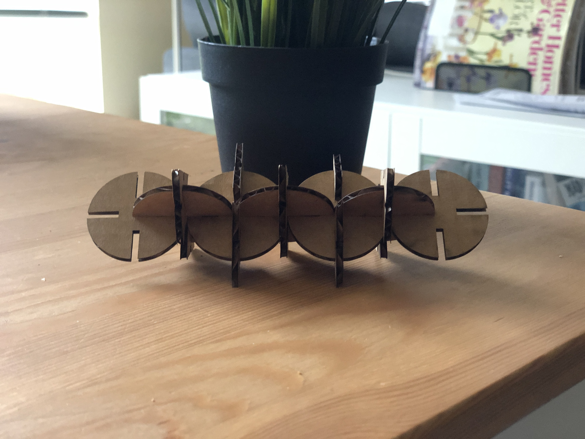
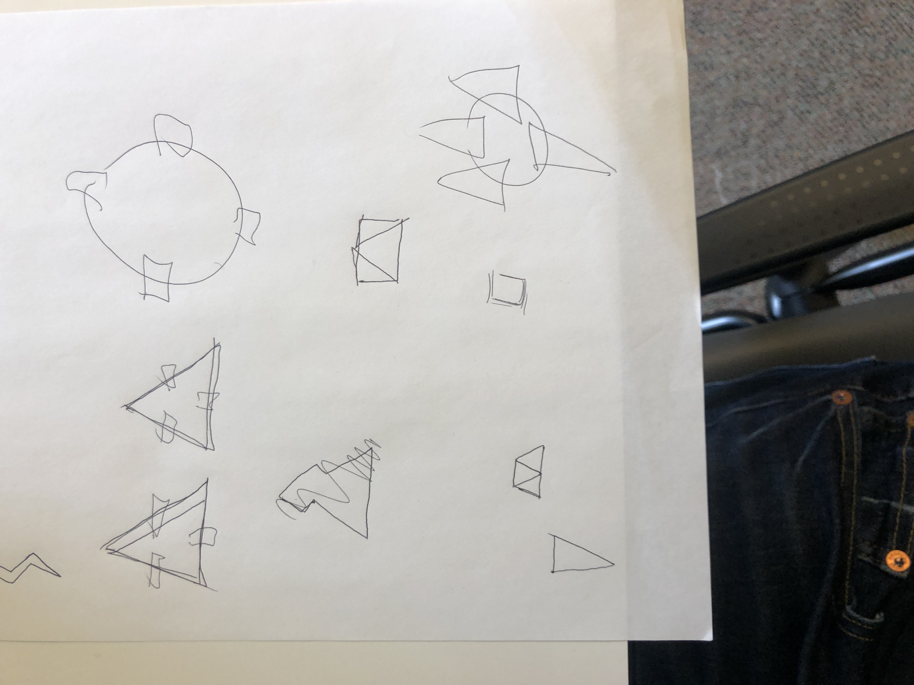
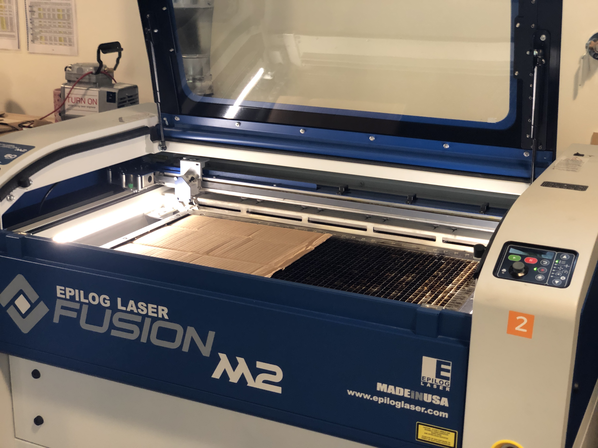
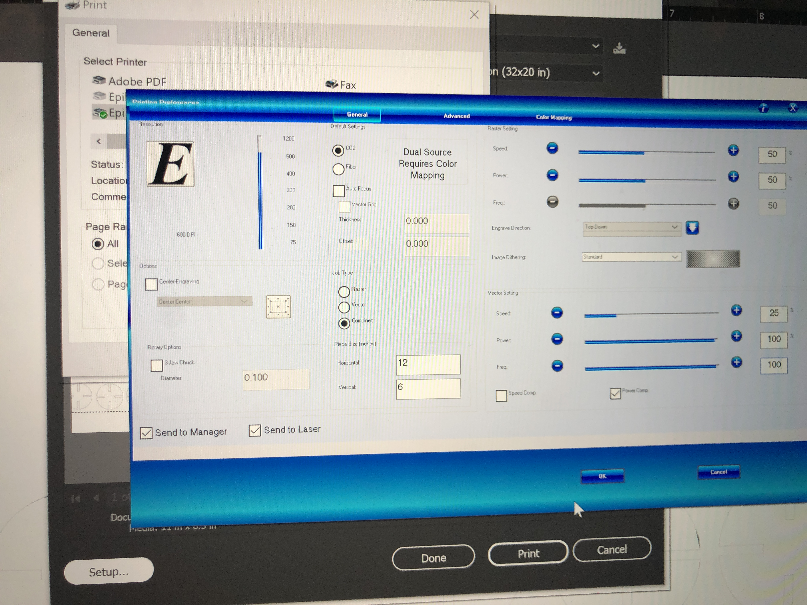
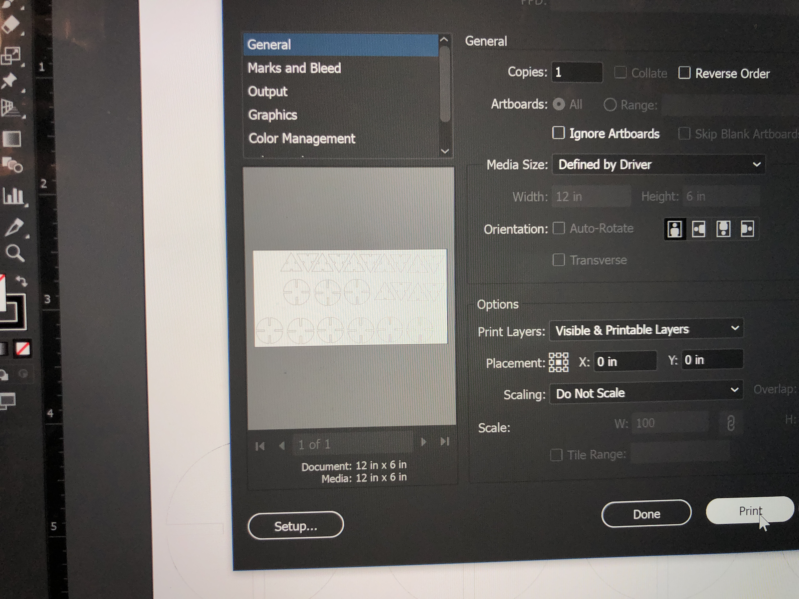
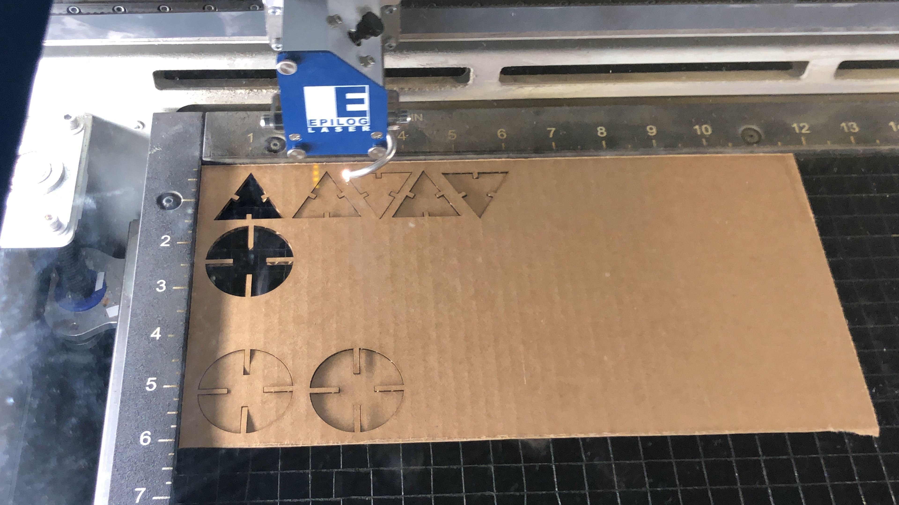

Assignment 1
Triangles are my favorite shape, with circles coming in close seconds
Three points, where two lines meet...
I love geometric patterns and repetition, so I figured creating this construction kit would lend itself well to create some kind of geometric, abstract pattern. Triangles are very strong shapes structurally, and I knew that I would be able to cut them out in a way that maximizes cardboard. I began sketching out potential ways I can put these two basic shapes together

In these sketches, I also started figuring out where the notches would be in each shape, and approximately how deep they would need to be. After measuring my cardboard (which was about .2 mm), and figuring out how I wanted the shapes to look, I then moved to Illustrator where I created the initial designs.
I then started with a test print of a few shapes, to see what settings would work best, and if the gaps I had designed would work together.

My print settings for my first print were as follows:

After printing the first two shapes, I verified that they fit together, and would help steady (even after light shaking). I then copy and pasted the shapes into the artboard that was sized for my piece of cardboard. Since I test printed on the same piece of cardboard, I made sure to leave a blank spot in my Illustrator design where the first two shapes were.

I then printed again using the settings I used before and ended up with my final cuts!

After printing out all my pieces successfully (printing more than I needed just in case!), I began to assemble the pieces in a symmetrical pattern. The final product is below:
Reflection
I found the initial concepting and design the hardest part of the assignment, as I wasn’t sure about the measurements/angles/fit for each slot. However, the core of this design was symmetry, and keeping that in mind throughout the design and prototyping helped keep me on focus.
It also was very cool to see the laser cutter bring my digital designs to real life, and created a sense of pride in my creation, even if it was something as small and abstract as this first project!
Collaborators: Thanks to Hannah N. and Elizabeth Q. for helping me with laser cutting and Illustrator respectively!